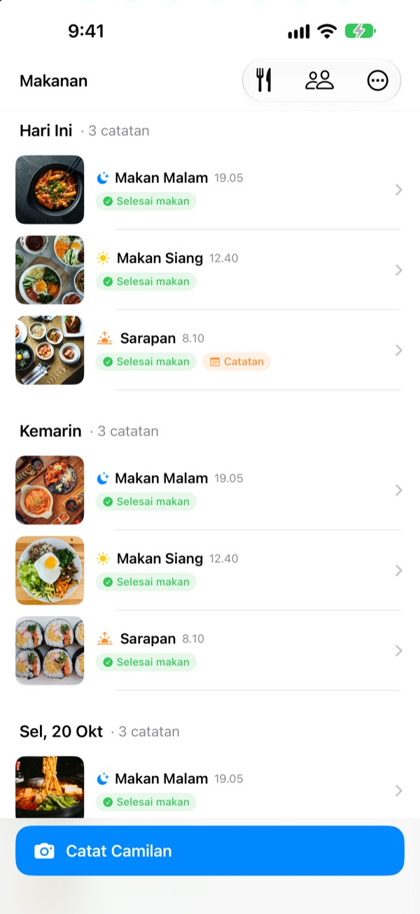
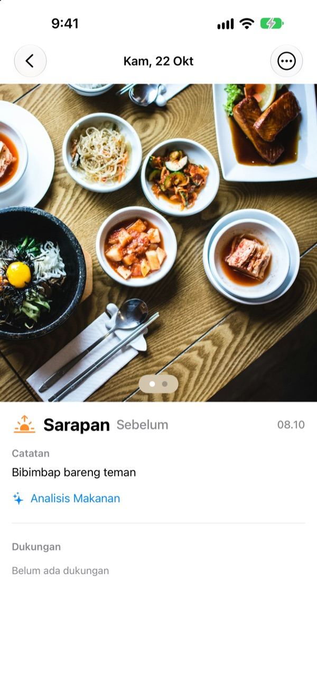
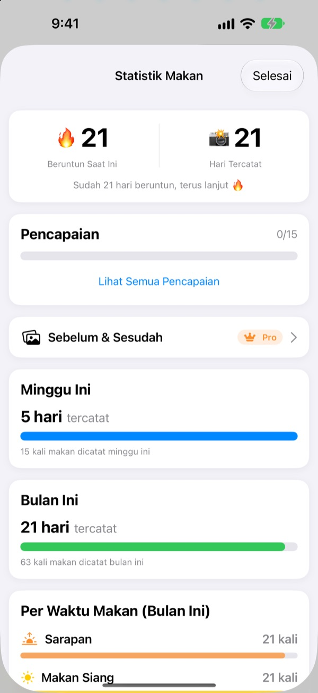
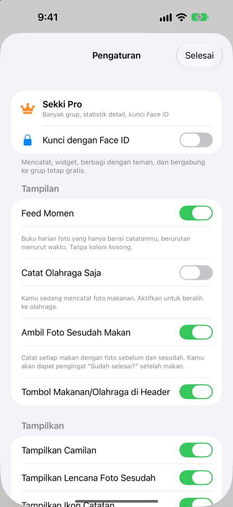

Satu foto sebelum makan.
Selesai dicatat.
Sekki melihat jam foto diambil, lalu memasukkannya ke sarapan, makan siang, makan malam, atau camilan. Cukup catat satu kali makan sehari, beruntunmu tetap jalan.
Pencatatan, statistik, widget, dan berbagi dengan teman semuanya gratis.

Coba sendiri
Pilih jam lalu ketuk tombol catat. Sama seperti di aplikasi, tombolnya sudah menunjukkan waktu makan untuk jam itu.
Pernah berhenti mencatat makanan setelah tiga hari?
Sekali lewat sarapan, lupa makan malam, lalu kotak-kotak kosong mulai mengganggu sampai aplikasinya dihapus. Sekki tidak punya kotak kosong. Hanya makanan yang kamu catat yang tersusun berurutan, dan satu foto saja sudah membuat hari itu terhitung.
Jepret, waktu makannya langsung tertata
Dari jam foto diambil, Sekki memasukkannya ke sarapan, makan siang, makan malam, atau camilan. Tambahkan foto sebelum dan sesudah, catat tanpa foto, atau tulis catatan.
Makanan dikenali langsung di perangkat secara gratis, dan fotomu tidak pernah keluar dari ponsel.

Catatan yang tidak pernah berkurang
Satu kali makan sehari menjaga beruntunmu, dan total hari tercatat tidak pernah turun. Statistik mingguan dan bulanan menunjukkan berapa hari dan berapa kali makan yang kamu catat, bukan persentase.
Sepanjang jalan kamu mengumpulkan pencapaian seperti Beruntun 7 Hari dan Si Pagi.

Hanya waktu makan pilihanmu, tanpa membuka aplikasi
Pilih waktu makan yang ingin diingatkan, lalu atur jamnya sesuai harimu. Setelah foto sebelum makan, tandai Selesai makan langsung dari notifikasi.
Catat juga lewat tombol Tindakan, Siri, Pintasan, atau widget, dan tambahkan teman dengan kode untuk saling menyemangati lewat emoji dan komentar.

Mulai dalam tiga langkah
- 1
Pilih waktu makanmu
Saat pertama dibuka, Sekki menanyakan waktu makan mana yang perlu diingatkan. Bisa diubah di Pengaturan.
- 2
Foto sebelum makan
Tombol catat sudah menampilkan waktu makan untuk jam sekarang. Ketuk, jepret, beres.
- 3
Selesai? Ketuk sekali
Ketuk Selesai makan di notifikasi atau widget, atau tambahkan foto sesudah makan.
Mencatat tanpa membuka aplikasi
- Notifikasi
- Setelah foto sebelum makan, tandai Selesai makan langsung dari notifikasi
- Widget Layar Utama
- Lihat jumlah catatan hari ini dan makanan yang sedang disantap, lalu ketuk Selesai makan
- Widget Layar Terkunci
- Persegi panjang, lingkaran, dan satu baris
- Tombol Tindakan · Siri · Pintasan
- Catat Selesai makan dengan satu tombol atau satu kalimat
- Simpan ke Foto
- Aktifkan di Pengaturan untuk album Sekki terpisah bagi makanan dan olahraga
- Mode olahraga
- Catatan olahraga dipisah dari makanan, dengan jumlah latihan bulan ini sekilas
Tombol Selesai makan di widget memerlukan iOS 17 atau versi lebih baru.
Mencatat itu gratis. Sekki Pro melihat lebih dalam.
Gratis
- Catatan foto dengan pemilahan otomatis, foto sebelum dan sesudah, catatan
- Beruntun, total hari, statistik mingguan dan bulanan, pencapaian
- Pengingat untuk waktu makan pilihanmu, Selesai makan tanpa membuka aplikasi
- Widget, tombol Tindakan, Siri, dan Pintasan
- Berbagi makanan dan olahraga dengan teman, emoji dan komentar
- Buat satu grup, gabung ke grup lain sebanyak apa pun
- Pengenalan makanan di perangkat
Sekki Pro
- Banyak grup untuk keluarga, kantor, atau teman olahraga
- Bandingkan makanan beberapa minggu lalu dan hari ini berdampingan
- Lihat makanan yang paling sering kamu santap
- Kunci aplikasi dengan Face ID atau Touch ID
Langganan tahunan atau bulanan, atau sekali beli seumur hidup
Langganan diperpanjang otomatis kecuali dibatalkan setidaknya 24 jam sebelum periode berakhir. Batalkan kapan saja di Pengaturan > Akun Apple > Langganan. Ketentuan layanan: m1zz.github.io/RoutineCamera/id/terms.html
Pertanyaan umum
Di mana fotoku disimpan?
Di perangkatmu. Jika Simpan ke Foto Otomatis diaktifkan di Pengaturan, foto juga masuk ke album Sekki di app Foto. Selama Bagikan Makananku aktif (awalnya aktif), foto diunggah ke iCloud supaya teman yang kamu tambahkan bisa melihatnya. Matikan di Pengaturan > Akun & Berbagi.
Bagaimana cara menambah teman?
Di layar Teman, bagikan kode enam karakter milikmu dan masukkan kode temanmu. Beberapa kode bisa ditempel sekaligus, dipisahkan koma.
Bagaimana cara menyemangati teman?
Buka salah satu makanan temanmu dan tinggalkan emoji atau komentar singkat. Kalau dia belum mencatat, ketuk kotak kosongnya untuk mencolek pelan.
Apakah beruntunku putus kalau melewatkan satu kali makan?
Tidak. Catat waktu makan apa pun hari itu, termasuk camilan, dan beruntunmu berlanjut. Meski melewatkan satu hari penuh, total hari tercatat tidak berkurang.
Notifikasi tidak masuk.
Periksa di Pengaturan iOS > Notifikasi bahwa notifikasi Sekki diizinkan, dan perangkat sudah masuk ke iCloud. Jam pengingat bisa diubah di pengaturan aplikasi.
Apakah pengenalan makanan mengirim fotoku ke server?
Tidak. Prosesnya di perangkat, jadi foto tidak pernah keluar dari ponsel. Gratis tanpa batas.
Bagaimana cara menghapus akun dan data?
Buka Teman > Akun > Hapus Akun. Akun dan data makanan di server akan dihapus dan tidak bisa dipulihkan. Kalau ada kendala, kirim email ke kami.
Bagaimana cara membatalkan langganan?
Di Pengaturan > Akun Apple > Langganan. Langganan diperpanjang otomatis kecuali dibatalkan setidaknya 24 jam sebelum periode berakhir. Pembelian seumur hidup cukup dibayar sekali.
Laporan bug, ide fitur, atau pertanyaan soal akun: kirim email ke leeo@kakao.com atau DM Instagram @lee25_ios. Biasanya kami membalas dalam satu atau dua hari.